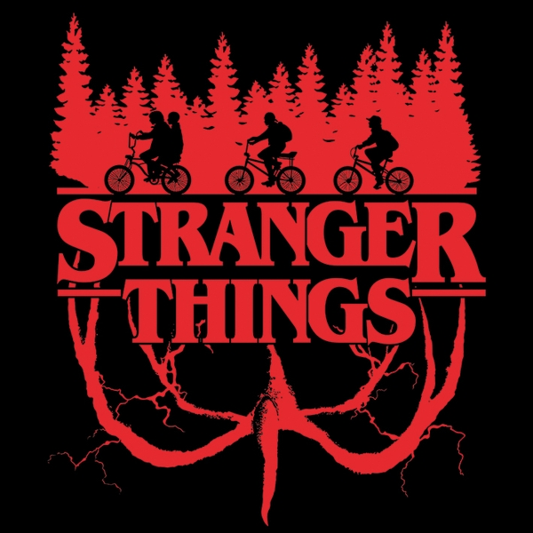
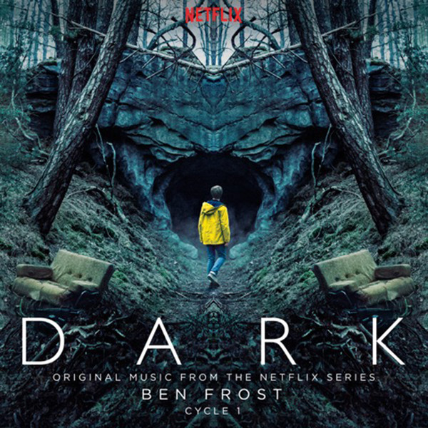

Series
En mis tiempos libres que gusta ver series y peliculas de diferentes generos. Entre mis series favoritas estan Game of Thrones, Dark, Breaking Bad, entre otras.
Otras series
- 
- 
Juegos Favoritos
Entre mis juegos favoritos y a los que les he dedicado más horas de juegos son:
- Call Of Duty: Black Ops
- Call Of Duty: Black Ops 2
- Call Of Duty: Modern Warfare 3
- Fifa
- GTA V
Música
Billie Jean
- Cantante: Michael Jackson
- Duración: 4:55
Moving On
- Cantante: Asking Alexandria
- Duración: 4:02
Bohemian Rhapsody
- Cantante: Queen
- Duración: 5:59
Mis Deportes Favoritos
Futbol
Uno de mis pasatiempos favoritos es ver y jugar futbol. Me gusta ver la liga de futbol mexicana y algunos partidos de las ligas españolas. Mi equipo favorito es el barcelona.
Llevo jugando futbol desde que estaba en la primaria y he tenido la oportunidad de jugar en diferentes equipos y en ligas con diferente modalidad de juego. He jugado futbol rápido, futbol 7 y futbol soccer. Mi posición dentro de la cancha es medio por el lateral izquierdo o derecho.
Leonel Messi

Otros Deportes
Basketball
El basketball, es un deporte que no sigo mucho pero me gusta jugarlos de vez en cuando.
Ajedrez
El ajedrez es otro juego que me gusta seguir y jugar.